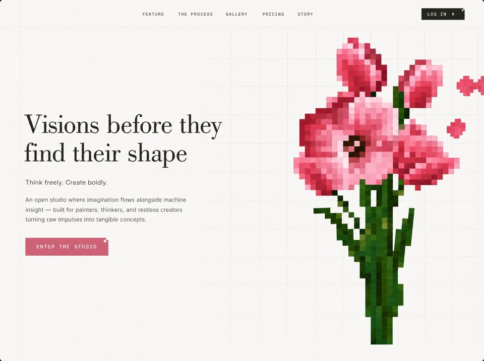

Pixel Muse
Creative Studiocreative-studioyilai-ai 公开页面
收录时间：2026-08-23正文：6,769 字符

本地预览图 · jpeg
完整提示词
Build a pixel-accurate recreation of a luxury AI creative studio landing page named Atelier. Recreate only this page: a fixed top navbar plus a full-viewport hero. Do not add extra sections, logos, search, or extra copy. Match layout, spacing, type, color, animation, and breakpoints exactly. Stack and global setup React + TypeScript + Vite + Tailwind CSS v3. lucide-react for Menu, X, ChevronRight. Antialiased fonts on html. Body background #f8f6f1. Page wrapper uses Inter as the default font. Google / web fonts (load exactly): https://db.onlinewebfonts.com/c/1e129bd49263cbc8354756df5045168f?family=Bodoni https://fonts.googleapis.com/css2?family=Inter:wght@300;400;500;600&family=Space+Mono:wght@400;700&display=swap font-bodoni → 'Bodoni', serif font-inter → 'Inter', sans-serif font-mono → 'Space Mono', monospace Tailwind colors (extend exactly): cream: #f8f6f1 rose.button: #d4637a rose.hover: #c4566c olive.dark: #2c2f24 olive.darker: #1f2118 Document title: Atelier — AI Creative Studio Custom CSS animations (must match) Easing: cubic-bezier(0.22, 1, 0.36, 1) unless noted. fade-in-up — 0.8s, forwards. From opacity:0; translateY(20px) to opacity:1; translateY(0). Initial state: opacity: 0. fade-in — 1s ease, forwards. Opacity 0 → 1. Initial: opacity: 0. reveal-line-x — 0.8s, forwards. scaleX(0) → scaleX(1). Initial: transform: scaleX(0). reveal-line-y — 0.8s, forwards. scaleY(0) → scaleY(1). Initial: transform: scaleY(0). nav-slide-down — 0.6s, forwards. From opacity:0; translateY(-10px) to opacity:1; translateY(0). Initial: opacity: 0. NAVBAR Fixed, top-0 left-0 right-0, z-50, bottom border 1px solid #e8e5de. No background fill (transparent over the hero video). No logo. No left brand mark. Inner container: max-w-[1400px] mx-auto, horizontal padding px-6 / md:px-10 / lg:px-16. Bar height: h-16 mobile, md:h-20 desktop. Flex, items-center justify-between. Desktop (md+): Centered nav in a flex-1 row, links hidden below md. Links (exact labels, all caps): FEATURE · THE PROCESS · GALLERY · PRICING · STORY hrefs: #feature #the-process #gallery #pricing #story Style: Space Mono, text-xs, tracking-[0.15em], color #2c2f24, hover #1f2118, 200ms color transition. Gap between links: gap-6 / lg:gap-10. Each link uses nav-slide-down with delay 0.2s + index * 0.08s (0.20, 0.28, 0.36, 0.44, 0.52). Right: LOG IN button, delay 0.7s. href #login bg-olive-dark (#2c2f24) white text, Space Mono text-xs tracking-[0.15em], px-5 py-2.5 hover bg-olive-darker (#1f2118), 200ms inline-flex, gap-2, ChevronRight size 14, strokeWidth 2.5 Corner notch (absolute top-right, 10×10px, 2×2 grid): TL transparent · TR white · BL #FDFBF7 · BR transparent This cuts a small L-shaped bite from the top-right corner. Mobile (< md): Hide desktop links and login. Hamburger on the right (ml-auto), delay 0.3s. Button p-2, olive-dark, aria-label="Toggle menu". Icon box w-6 h-6. Menu and X stacked absolute, 300ms transition: Closed: Menu opacity-100 rotate-0 scale-100; X opacity-0 -rotate-90 scale-75 Open: Menu opacity-0 rotate-90 scale-75; X opacity-100 rotate-0 scale-100 Full-screen overlay fixed inset-0, bg-cream (#f8f6f1), z-40, md:hidden. Open: opacity-100 pointer-events-auto Closed: opacity-0 pointer-events-none Transition 500ms, same cubic-bezier. Overlay content: vertical center, column, gap-8. Same 5 links, Space Mono text-sm tracking-[0.2em], olive-dark, hover darker. Stagger: when opening, each item opacity-100 translate-y-0 with delay (index+1)*80ms; when closed opacity-0 translate-y-4, delay 0. Duration 500ms, same easing. Then LOG IN: mt-4 on the list item, delay (6)*80ms = 480ms. Dark olive button, px-6 py-3, ChevronRight 14 / 2.5. Tapping a link closes the menu. HERO <section>: relative h-screen min-h-[700px] overflow-hidden. Background video (exact URL, do not substitute): https://d8j0ntlcm91z4.cloudfront.net/user_38xzZboKViGWJOttwIXH07lWA1P/hf_20260819_214632_c6e637b5-308a-4f13-b06c-354e9dbda842.mp4 absolute inset-0 w-full h-full object-cover autoPlay muted loop playsInline Animation: fade-in, delay 0.1s Decorative frame lines (z-10): Top edge: full width, h-px bg-[#e0ddd6], origin-left, reveal-line-x, delay 0.3s Left vertical: left-6 md:left-10 lg:left-16, top-0 bottom-0 w-px bg-[#e8e5de], origin-top, reveal-line-y, delay 0.5s Right vertical: right-6 md:right-10 lg:right-16, same as left, delay 0.6s Bottom edge: full width, h-px bg-[#e0ddd6], origin-right, reveal-line-x, delay 0.7s Content: relative z-10 h-full max-w-[1400px] mx-auto px-6 md:px-10 lg:px-16 flex flex-col justify-center Inner block: max-w-2xl pt-20 md:pt-0 (extra top padding only on mobile so copy clears the 64px nav). H1 — Bodoni, color #2c2f24, leading-[1.05] tracking-[-0.02em], fade-in-up delay 0.4s Sizes: text-[2.75rem] / sm:text-[3.5rem] / md:text-[4rem] / lg:text-[4.5rem] Exact copy and break: Visions before they<br class="hidden sm:block" /> find their shape On extra-small screens the line stays one flowing sentence (no forced break). From sm up it breaks after “they”. Tagline — mt-6, Inter, text-sm md:text-base, #2c2f24 at 80% opacity, tracking-wide, fade-in-up delay 0.6s Exact: Think freely. Create boldly. Body — mt-5, Inter, text-sm md:text-[15px], #2c2f24 at 70% opacity, leading-relaxed, max-w-md, fade-in-up delay 0.8s Exact: An open studio where imagination flows alongside machine insight — built for painters, thinkers, and restless creators turning raw impulses into tangible concepts. CTA — wrapper mt-8, fade-in-up delay 1s Link #explore, label ENTER THE STUDIO inline-flex items-center gap-3 bg-rose-button (#d4637a) white text Space Mono text-xs tracking-[0.2em] px-7 py-4 hover #c4566c, 200ms Corner notch 14×14px, 2×2 grid, absolute top-right: TL transparent · TR white · BL #FDFBF7 · BR transparent Layout behavior (must match) Hero is 100vh, never shorter than 700px. Video is full-bleed cover; text sits left, vertically centered, over the video (no overlay gradient, no dark scrim). Horizontal inset of content and the vertical frame lines share the same padding: 24px / 40px / 64px (6 / 10 / 16). Desktop nav links sit in the horizontal center of the 1400px container; login sits on the far right of that container. Mobile: hamburger only; full cream overlay menu; hero title gets pt-20. Do not Do not invent a logo, wordmark, or extra nav items. Do not change the CloudFront URL or video attributes. Do not add a color overlay on the video. Do not round the buttons; they are sharp rectangles with the 2×2 corner-cut mosaic. Do not use a different Bodoni source; use the onlinewebfonts Bodoni stylesheet above. Implement Navbar and Hero as separate components. Page is Navbar + Hero only.
把上面的提示词完整复制到支持长文本的 AI 工具中，再按需要替换品牌名、配色与文案。提示词描述的是整页结构与动效节奏，生成后建议在真实浏览器里检查首屏加载和移动端表现。
来源与版权
该条目来自公开提示词页面，原始出处信息未随页面提供。
提示词文本与预览素材的版权归原作者或原平台所有，本站仅作索引与归档。若你是权利人并希望移除本条内容，请通过联系方式告知。
同分类提示词
暂无同分类条目。